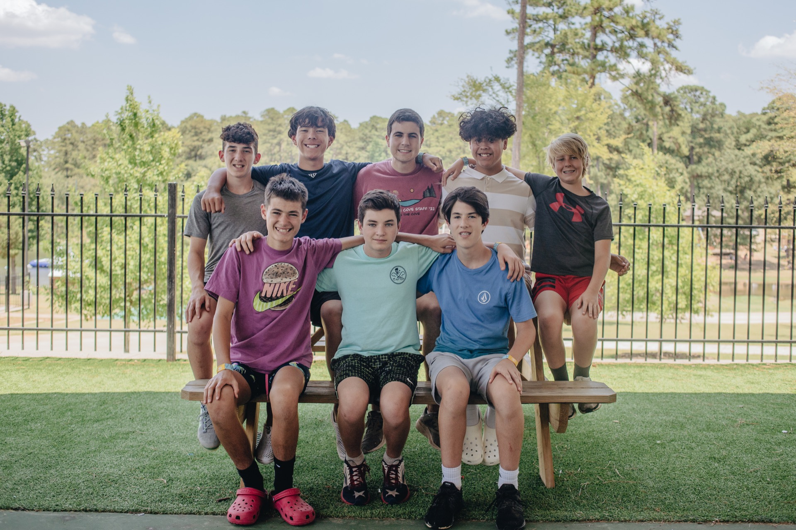
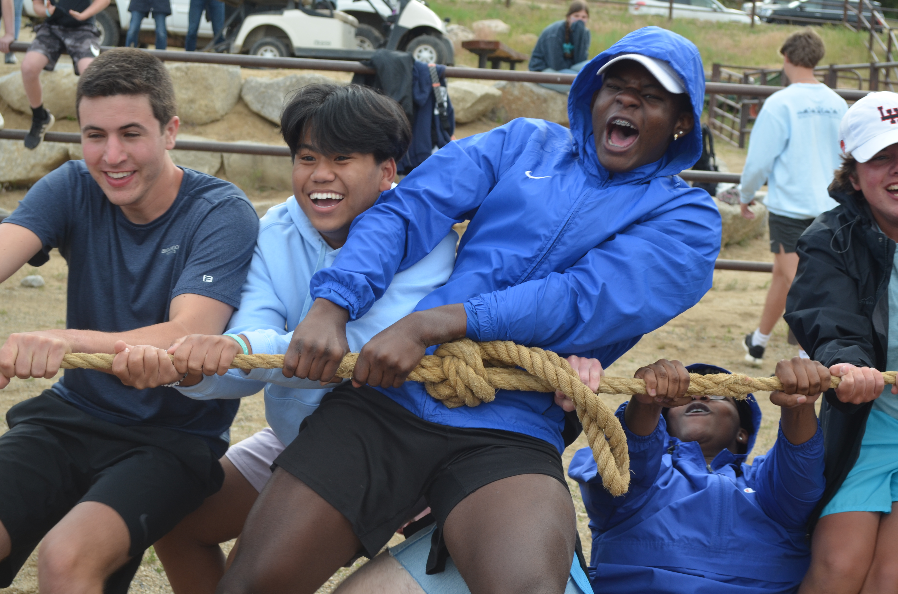

Star Wars Theme
Sleek Theme
Star Wars Theme
Sleek Theme

Editing One of my greatest sources of joy in life comes from sharing the gospel of Jesus Christ with children and watching as God works in their lives. I have had the privilege of being a leader and counselor for a couple of high school aged summer camps. Being able to invest in the lives of people who are younger than you and desperately need a role model in their life as well as being able to show them the gospel of Jesus through those opportunities is a life changing experience.
The most recent was at Pine Cove Timbers for 5 weeks this summer. There I worked with 8th and 9th graders and was able to mentor them, have genuine fun with them and point them towards scripture as they were able to experience a relationship with God in their own way. I was also able to work alongside other college students with the same goal and to encourage them as they did to me. We had to work together to overcome the challenges that this summer threw at us.
 I also had the opportunity in high school to serve on a mission trip to South Texas near the border with Mexico. It was eye opening to realize that you don't even have to leave our state to see people who are in need of help. On this trip we worked with a local organization called Hearts for Kids to meet peoples physical as well as spiritual needs by hosting lunches, providing supplies and labor to repair houses, and pointing people towards the local churches in the area. I remember being taken aback at how people who had so much less than I did could still be so content with their lives. This experience helped me learn that money will never be able to fulfill me and that the reason these people were so content and joyful was because they knew God.